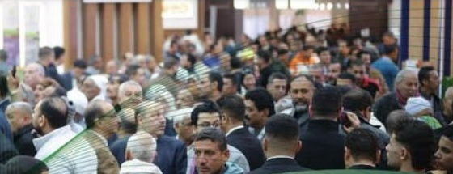

نلفت الانتباه
نعلن عن المعرض، ونستعرض لحظات حقيقية من دوراته السابقة.
نحكي تجربة أجري إكسبو بشكل أوضح.
علشان كل عارض وراعي وزائر يعرف ليه المشاركة تهمّه.
خبرتين. اتجاه واحد.
قيمة المعرض تستاهل تظهر.
من الصورة الحالية ← إلى الفكرة ← إلى التنفيذ
مرّر لاكتشاف العرضأمثلة من الحسابات نفسها، بتوضح فرص لتحسين تقديم المعرض. من غير افتراض نتائج أو أرقام أداء.
وجود شعارات الشركات مش مشكلة في حد ذاته. الفرصة إن كل اسم يظهر مع سبب وجوده، وإيه اللي هيضيفه للتجربة.
حضور أخبار المشاركين واضح، وفي فرصة أكبر لإظهار هوية المعرض وتجربته ككل.
نربط أخبار المشاركين بحكاية المعرض: إيه اللي هتشوفه؟ وليه وجودك مهم؟
المراجعة مؤرخة في ١٩ أكتوبر ٢٠٢٦، عن العينة المتاحة من فيسبوك وإنستجرام خلال ٢١ يوليو–١٩ أكتوبر. العينة ليست حصرًا كاملًا لكل المنشورات.
ظهرت فترات نشر متباعدة في عينة إنستجرام. نحتاج جدولًا متصلًا، لكن ده وحده لا يثبت ضعف الوصول أو التفاعل.
نوحّد وصف المعرض ومعلوماته وروابطه بين الحسابات والموقع. ولا نفترض أن التسجيل متعطّل لمجرد أن طريقه محتاج توضيح.
مش بس مين هيشارك.
كمان ليه المشاركة تستاهل، وإيه اللي بيصنع التجربة.
نعلن عن المعرض، ونستعرض لحظات حقيقية من دوراته السابقة.
نشرح لكل فئة ليه المعرض يهمها، بأشخاص وتجارب وأمثلة محددة.
نرتّب معلومات المشاركة والزيارة، ونوضّح الخطوة التالية.
نوريه شكل المشاركة، ونوع المنتجات والقطاعات الموجودة، وتجارب سابقة تساعده يتخيّل مكان شركته في المعرض.
مثال: شركة بتشرح منتجها من جناحها في دورة سابقة.دورنا توضيح القيمة وبناء الاهتمام. التعاقدات وإدارة العلاقات التجارية مسؤولية إدارة المعرض.
نوفمبر يعرّف الناس.
ديسمبر يقرّب لهم القيمة. يناير يجهّزهم للحضور.
نعلن عن الدورة الجديدة ومعلوماتها المعتمدة، ونفتكر التجربة السابقة بلقطات توضّح طبيعة المعرض وقيمته.
رسالة تعرّف بالمعرض وتعلن موعده ومكانه بالمعلومات المعتمدة.
لحظات حقيقية من الأجنحة والمنتجات واللقاءات.
فيديوهات مباشرة: المعرض بيقدّم إيه؟ وليه تعرض فيه؟
عرفت المعرض، وفهمت ليه أتابع أخباره.
الخطة مناسبة للتجهيزات الفعلية. قبل تركيب الأجنحة، نستخدم الأرشيف وشروحات الأشخاص والتحضير من داخل الشركة. تجهيزات أرض المعرض تظهر وقت حدوثها في الأيام القريبة من الافتتاح.
نفس الهوية في كل منشور.
وتنويع في الطريقة حسب الرسالة اللي بنشرحها.
ليه وجود شركتك
في المعرض يفرق؟
فيديوهات قصيرة، كل فيديو يجاوب سؤالًا واحدًا بلغة مباشرة ومعلومة مفيدة.

من دورة سابقةنوري اللي بنحكيه.
لقطات تخدم فكرة محددة، مع توضيح إنها من دورة سابقة، وشهادات موثّقة لو متاحة.
نظهر شغل فريق التنظيم داخل الشركة، وإزاي التحضير بيساعد الزائر والعارض.
«نرحّب بانضمام الشركة»
الشركة بتقدّم إيه؟
وإيه اللي تقدر تتعرّف عليه عندها؟
مسؤوليات واضحة، وشغل ماشي بخطوات.
من الفكرة لحد النشر والمتابعة.
الاستراتيجية، كتابة المحتوى، التصميم، المونتاج، إدارة النشر، الإعلانات، الردود والمتابعة.
المعلومات المعتمدة، التنسيق مع المشاركين، المراجعة والاعتماد، وإدارة التعاقدات والعلاقات التجارية.
الوصول ومشاهدة الفيديوهات.
استكمال المشاهدة، الحفظ والمشاركة.
نوع الأسئلة والرسائل اللي بتوصل.
زيارات الروابط والاستفسارات المرتبطة بها.
نراجع الأرقام الفعلية المتاحة بعد بدء العمل. من غير افتراض نتائج مسبقة أو وضع أهداف لأعداد العارضين والرعاة.
بعد الاتفاق على التعاون، نحوّل الاتجاه ده لخطة محتوى تفصيلية:
أفكار المنشورات، نصوصها، اتجاه التصميم، وجدول التنفيذ والنشر.